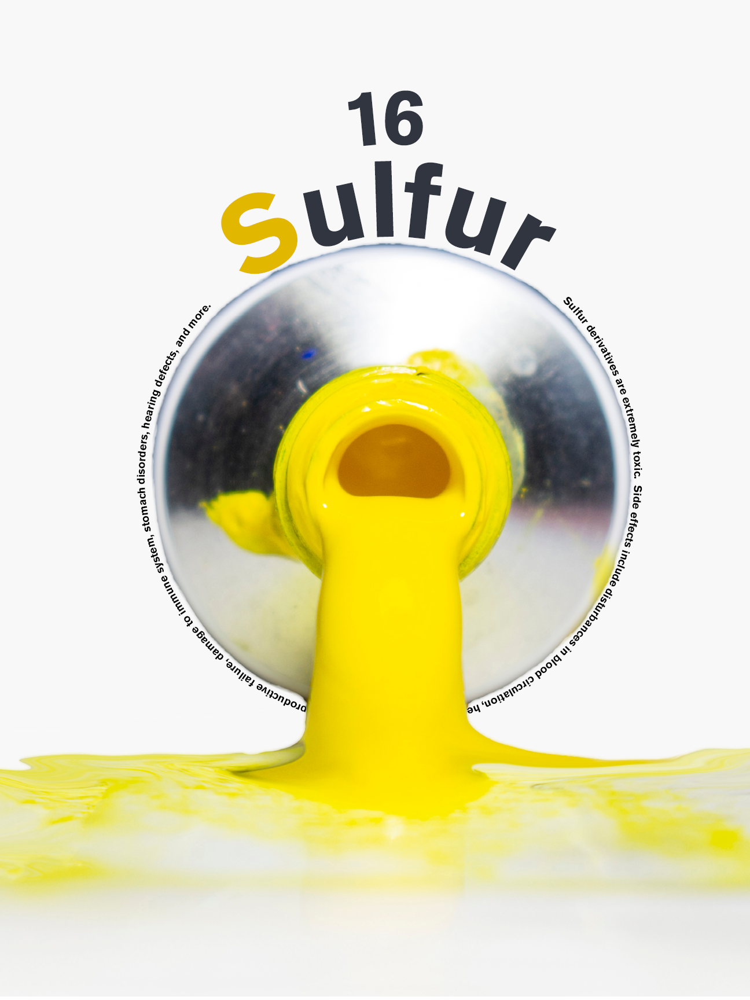
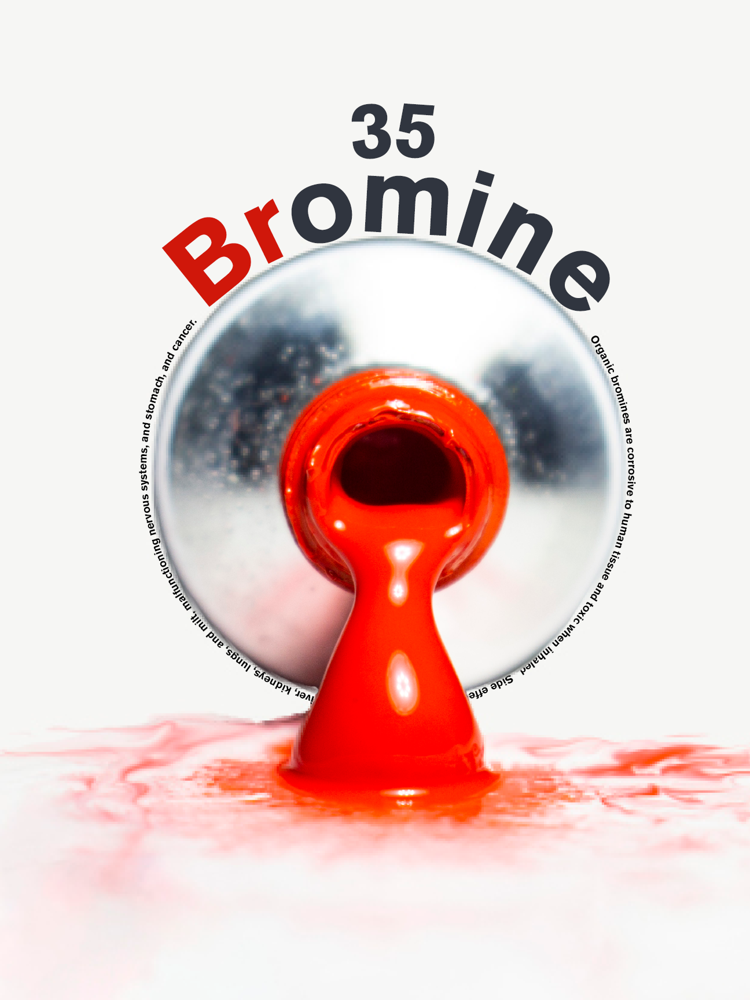
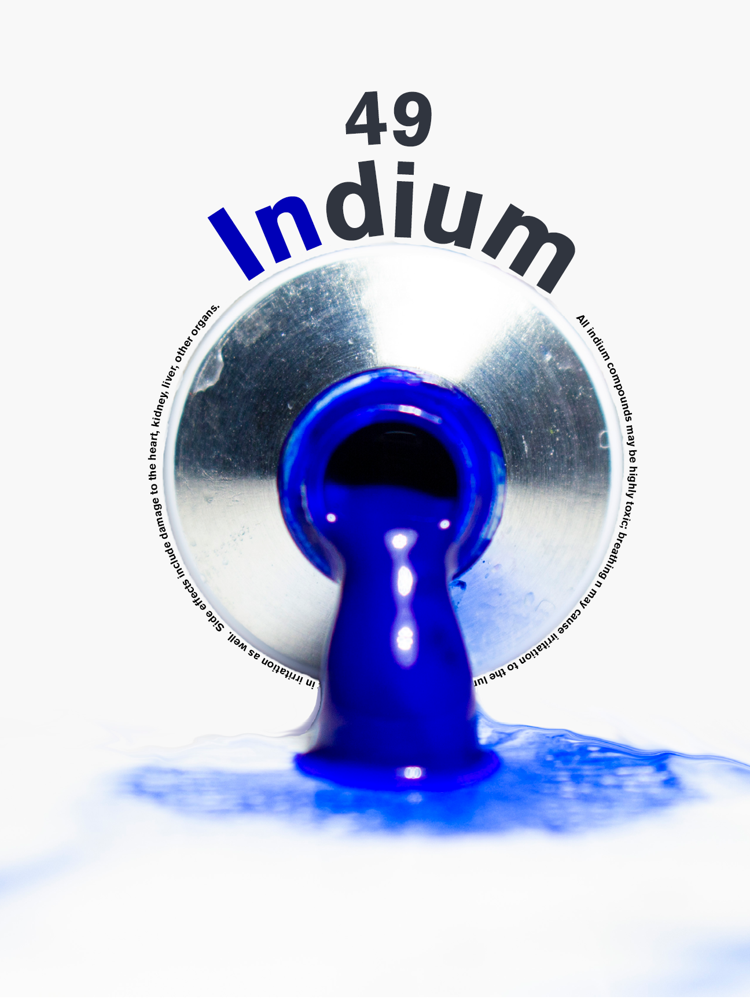

Visual Elements
Poster Design
May 2019
18"x24"
Visual Elements is a poster series displaying elements from the periodic table that boast a colored visual component alongside their chemical compositions. The three elements chosen for this triptych are sulfur, bromine, and indium, utilizing the primary colors of yellow, red, and blue, respectively, and representing them through the tradional art medium of dripping paint tubes.


